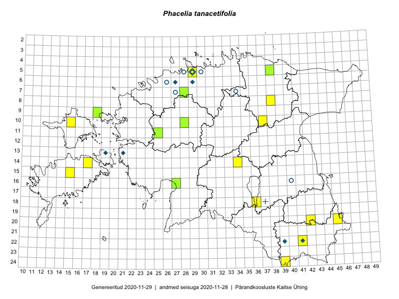

Phacelia tanacetifolia
Uuendatud: 2016-12-07
Kaardile koondatud taksonid: Phacelia tanacetifolia Benth.

Kaart põhineb 9 vaatlusel. Taime on leitud 8 ruudust.
| Ruut | Vaatleja(d) | Vaatlusaeg | Kirje tüüp | Viide andmebaasikirjele |
|---|---|---|---|---|
| 20-45 | Rein Kalamees, Kersti Püssa | 2015-05-27 | punkt | vaata PlutoFis |
| 14-17 | Meeli Mesipuu, Kadri Tali | 2015-07-08 | punkt | vaata PlutoFis |
| 22-41 | Eeva-Maria Jeletsky, Tarmo Niitla | 2015-08-04 | punkt | vaata PlutoFis |
| 22-41 | Eeva-Maria Jeletsky, Tarmo Niitla | 2015-08-04 | ruut/ala | vaata PlutoFis |
| 24-39 | Maret Gerz, Liina Oja | 2016-06-14 | ruut/ala | vaata PlutoFis |
| 10-37 | Liina Oja, Peedu Saar, Susanna Vain | 2016-07-25 | punkt | vaata PlutoFis |
| 14-34 | Tiit Hallikma, Thea Kull | 2016-07-22 | punkt | vaata PlutoFis |
| 18-36 | Peedu Saar, Mari Metsoja | 2016-07-20 | punkt | vaata PlutoFis |
| 15-15 | Meeli Mesipuu | 2016-09-23 | punkt | vaata PlutoFis |